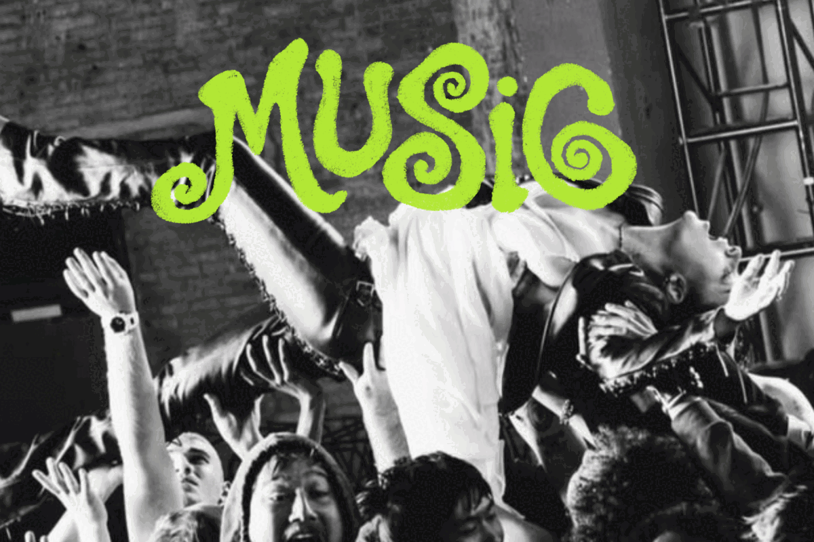
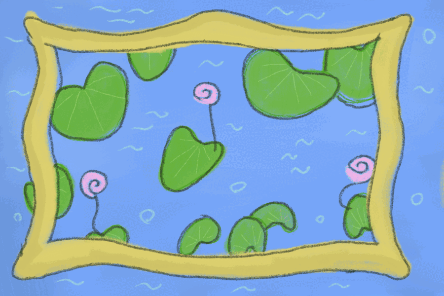
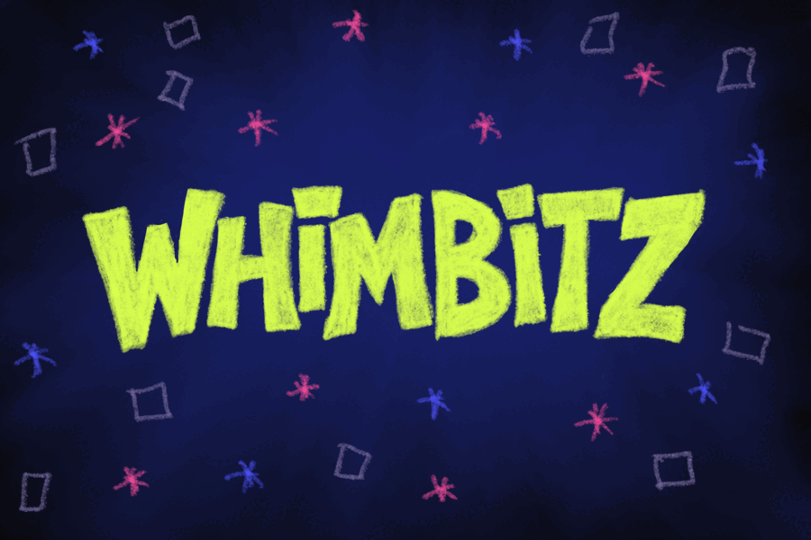

Offline Crush
independent publication · pop culture, music & the internet
selected work
projects, experiments & internet artifactsindependent publication · pop culture, music & the internet
personal branding · an evolving world of references

speculative album-era campaign · visual identity & rollout strategy

playable browser toy · creative coding experiment

mobile gaming app · AI-generated mini-games · iOS & Android
No projects in that category yet.